第10章 泌尿系统及男性生殖系统
原书页 318–342 · 25 个页面区块 · 34 张配图。正文、图注与图片保持原书顺序。
| ·BL | bladder | 膀胱 |
| ·Ep | epididymis | 附睾 |
| ·K | kidney | 肾 |
| ·LEP | left epididymis | 左侧附睾 |
| ·LK | left kidney | 左肾 |
| ·LTS | left testis | 左侧睾丸 |
| ·Ps | Psoas muscle | 腰大肌 |
| ·PST | prostate | 前列腺 |
| ·REP | right epididymis | 右侧附睾 |
| ·RK | right kidney | 右肾 |
| ·RL | Right liver | 肝右叶 |
| ·RRV | Right renal vein | 右肾静脉 |
| ·RSV | right spermatic vein | 右侧精索静脉 |
| ·RTS | right testis | 右侧睾丸 |
| ·Sc | scrotum | 阴囊 |
| ·SC | spermatic cord | 精索 |
| ·SP | spleen | 脾 |
| ·SV | spermatic vein | 精索静脉 |
| ·SV | seminal vesicle | 精囊 |
| ·Tes | testis | 睾丸 |
一、 双肾
（一） 侧腰部右肾冠状切面（图10-1）
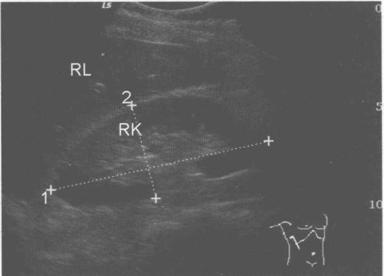
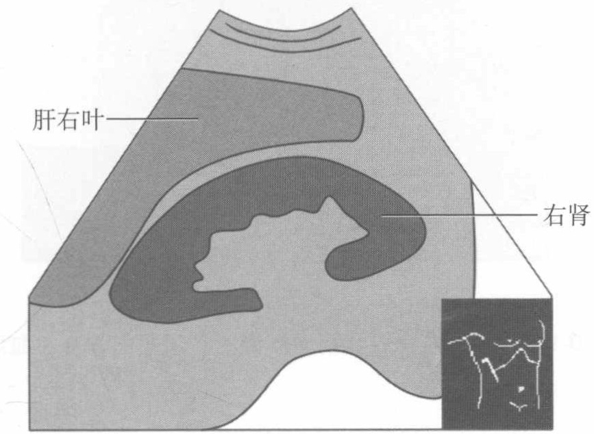
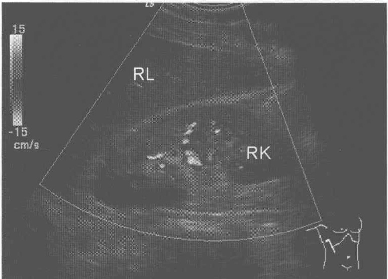
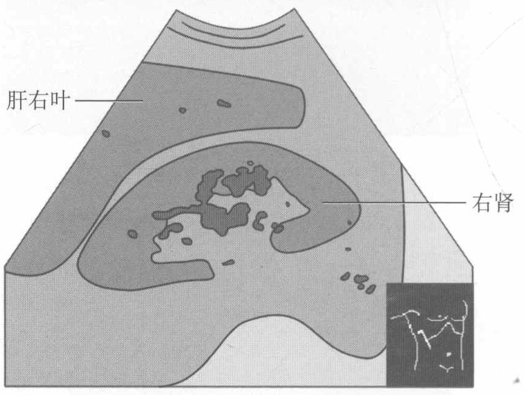
B
图10-1 侧腰部右肾冠状切面声像图、示意图和彩色血流图
【探查方法】仰卧位或左侧卧位，在腋后线第9或第10肋间做冠状切面扫查。右肾以肝脏做透声窗，如上极显示不清晰，可以嘱受检者深吸气使脏器下移。
【断面结构】右肾冠状断面及右肝斜断面。肾冠状断面显示包膜、肾实质及肾窦。实质由皮质和髓质组成。皮质在外层，其延伸到各椎体之间的部分称肾柱。髓质由放射状排列的椎体组成，椎体回声低于皮质，尖端指向肾门，即肾乳头。肾窦又称集合系统：位于肾中央的不规则稍强回声区，包括肾盂、肾盏、肾内血管及脂肪。
【测量方法及正常值】测肾长径，长为10～12cm。测皮质厚度正常值1.5～2.5cm，儿童及60岁以上老年人皮质较薄。
【临床价值】诊断肾弥漫性病变及占位性病变。肾盂发育畸形、肾盂积水。鉴别右上腹占位性病变的来源。
【附注】肾柱肥大需和肾实性占位性病变鉴别，前者和肾皮质回声相同，并和肾皮质相连，后者和肾皮质有分界，回声有差异。肾盏内可以有少量的无回声区，需和肾囊肿区别，前者的无回声区一般为多发，不规则，围绕肾盂整齐排列并和肾盂相通。
（二） 右上腹右肾脏横切面（图10-2）
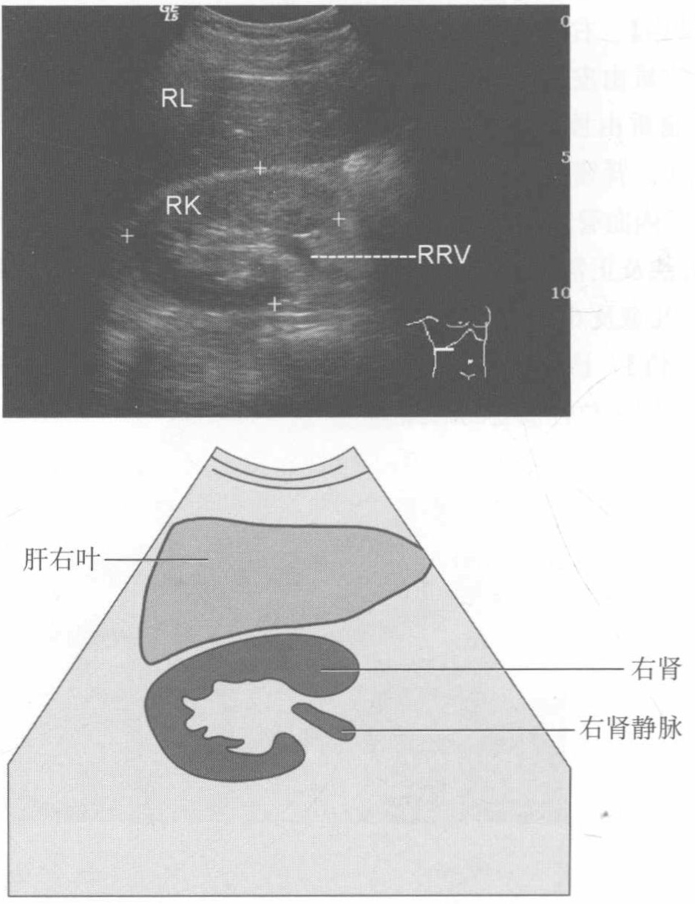
图10-2 右上腹右肾脏横切面
【探查方法】仰卧位或左侧卧位，在腋后线第9或第10肋间做横切扫查。探头上下移动。
【断面结构】显示肾脏的横断面、肾门结构。其后方为腰大肌横断面，前方为肝右叶的横断面。
【测量方法及正常值】 测量肾脏前后径和厚径。正常肾宽 5～6cm，厚 3～4cm。
【临床价值】对于位于肾包膜下或突出于包膜外的病变如囊肿较长轴切面显示清晰。显示腰大肌病变。肾上腺病变和肝右叶病变的鉴别。肾门病变的显示。
（三） 右上腹肝肾纵切面（图10-3）
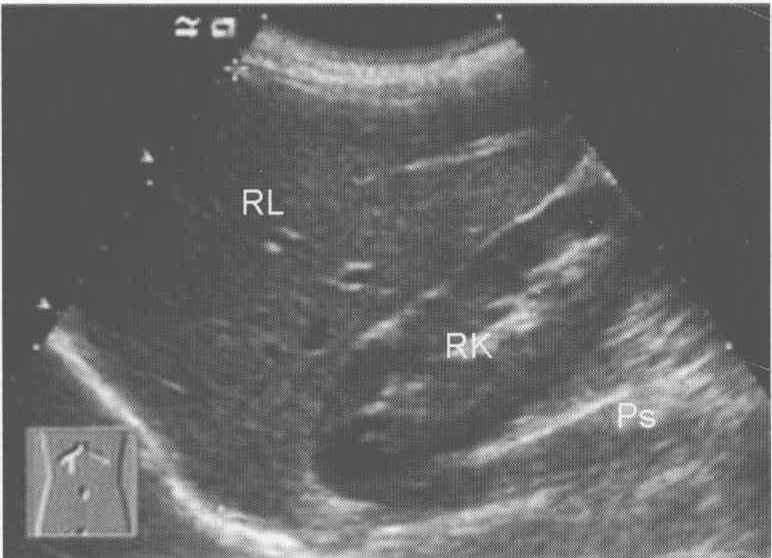
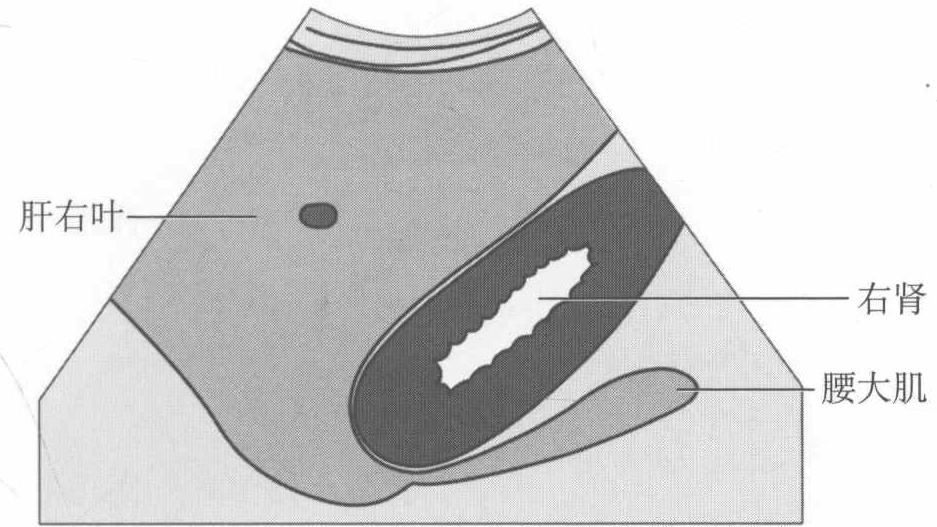
图10-3 右上腹肝肾纵切面
【探查方法】 空腹 8～12h，平卧位，探头竖置于右肋缘下锁骨中线外侧约1cm处，探头需和水平线垂直。嘱受检者深吸气使肝脏下移。显示出肝右叶最大前后径同时显示右肾纵断面为标准切面。
【断面结构】 肝右叶纵切面，右肾纵切面。右后叶下方和肾上极之间为右肝肾隐窝。
【测量方法及正常值】可以测量右肾长径，正常值10～12cm，老年人随着年龄的增长长径及皮质的厚度会缩小。
【临床价值】 肝右叶肾隐窝，仰卧时，是小骨盆以上的腹腔最低点，腹腔内的液体易积聚于此。正常情况下，肝右叶的脏面和右肾上腺紧贴。右上腹膜后大的占位病变可造成肝肾分离。鉴别占位性病变来自肝、肾还是腹膜后可以让病人深呼吸，肝脏会随着呼吸而移动，位于肾脏和腹膜后病变则不移动。
（四） 经背部右肾长轴断面（图10-4）
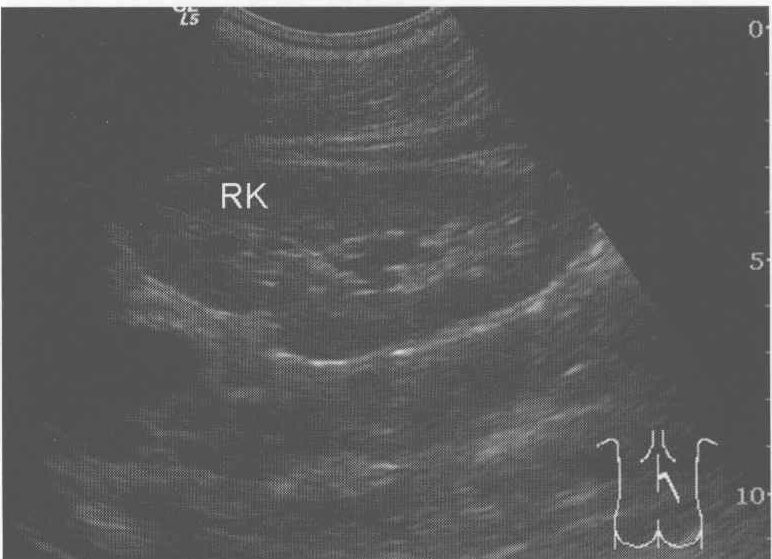
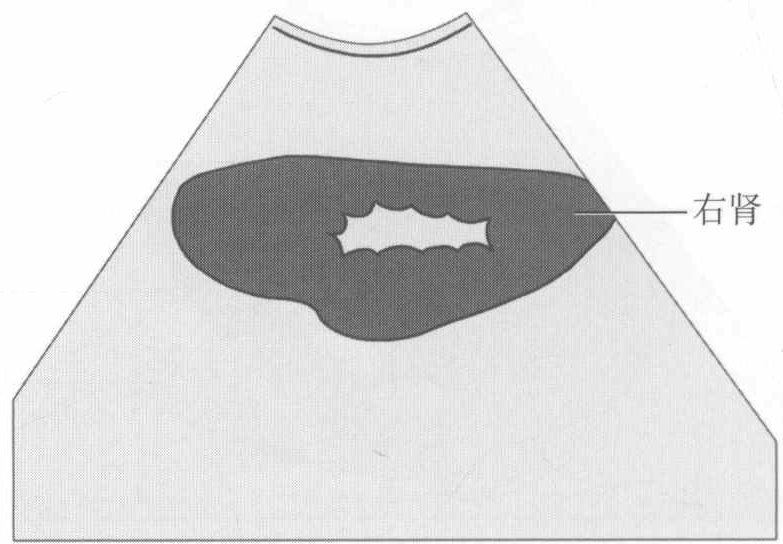
图10-4 经背部右肾长轴断面
【探查方法】俯卧位，于背部做纵切面扫查。
【断面结构】肾脏长轴断面显示皮质及集合系统结构。
【测量方法及正常值】测肾脏长径、皮质厚度，正常值：长10～12cm。皮质厚1.5～2.5cm。
【临床价值】此切面用于腹部气体多，经腹探查肾脏显示不清晰的受检者。
（五） 侧腰部左肾冠状切面（图10-5）
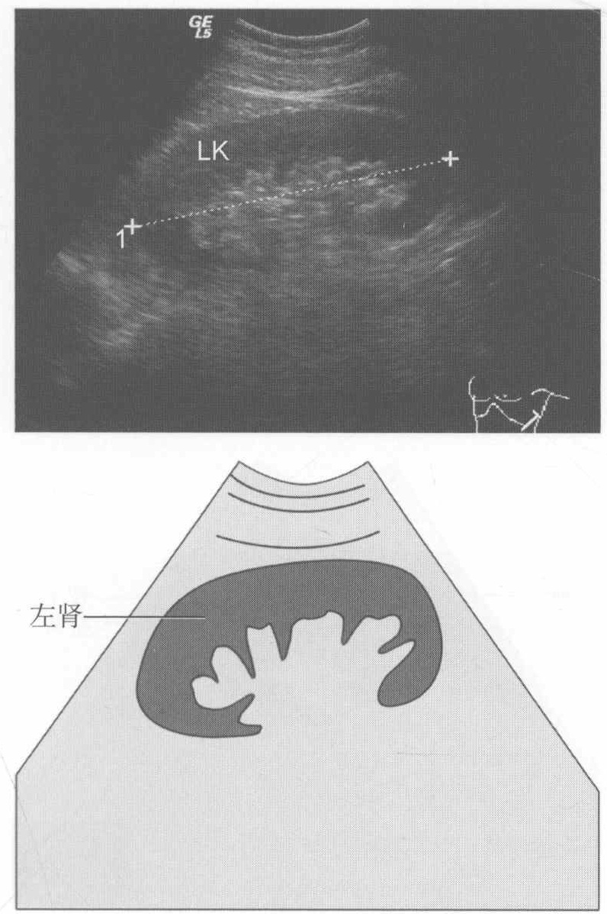
图10-5 侧腰部左肾冠状切面
【探查方法】仰卧位或右侧卧位，在腋后线第9或第10肋间做冠状切面扫查。可以以脾脏作透声窗，如上极显示不清晰，可以嘱受检者深吸气使脏器下移。
【断面结构】左肾冠状断面及脾下极斜断面。断面内结构同右肾。
【测量方法及正常值】测肾长径、皮质厚度。肾盂无回声区的宽度。通常左肾较右肾略大。
【临床价值】诊断肾弥漫性及占位性病变、肾盂发育畸形、肾盂积水。
（六） 左上腹左肾横切面（图10-6）
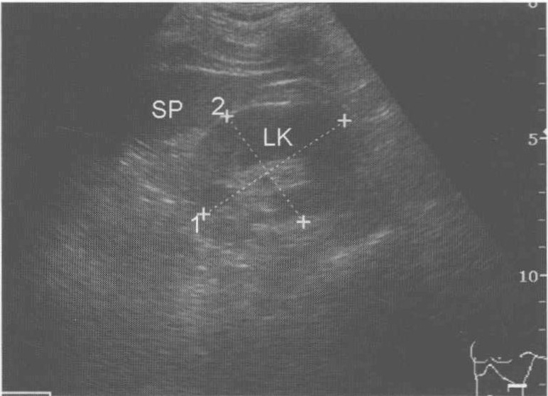
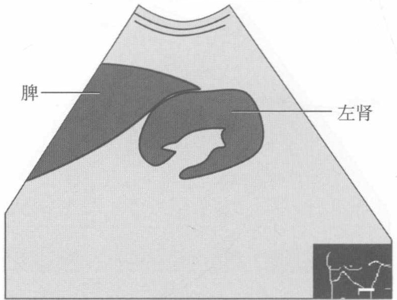
图10-6 左上腹左肾横切面
【探查方法】仰卧位，左上腹做横切扫查。探头上下移动。
【测量方法及正常值】测量肾脏前后径和厚径无正常值。
【断面结构】显示肾脏的横断面、肾门结构。其后方为腰大肌横断面，前方为脾脏下极横断面。
【临床价值】对于位于肾包膜下或突出于包膜外的病变如囊肿较长轴切面显示清晰。显示腰大肌病变。左肾、肾上腺病变、胰尾病变、腹膜后病变及脾脏病变的鉴别。肾门病变的显示。
（七） 经背部左肾长轴断面（图10-7）
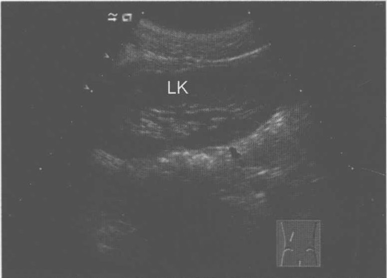
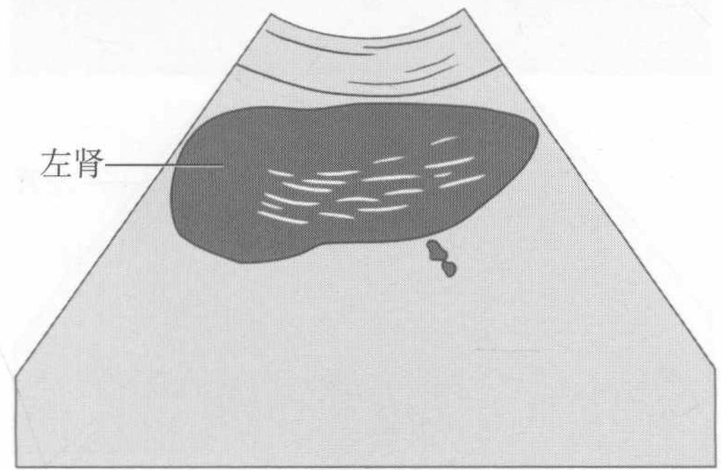
图10-7 经背部左肾长轴断面
【探查方法】俯卧位卧，于背部做纵切面扫查。
【断面结构】肾脏长轴断面显示皮质及集合系统结构。
【测量方法及正常值】测肾脏长径、皮质厚度。
【临床价值】此切面用于腹部气体多或肥胖经腹探查肾脏显示不清晰的受检者。
（八） 肾脏纵切面显示双肾盂（图10-8）
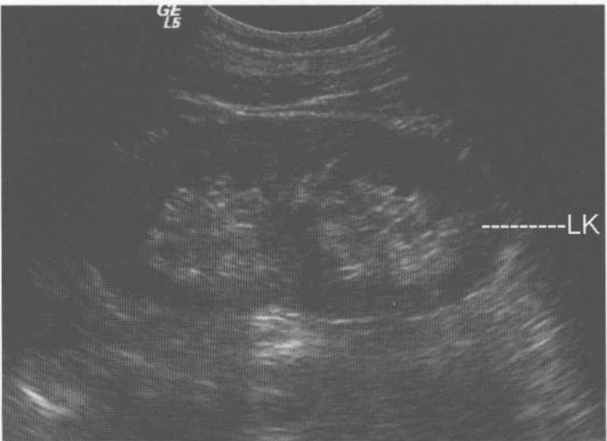
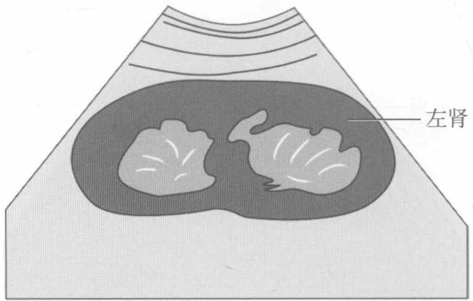
图10-8 肾脏纵切面显示双肾盂
【探查方法】侧卧位，在腋后线第9或第10肋间做冠状切面扫查。如上极显示不清晰，可以嘱受检者深吸气使脏器下移。
【断面结构】右肾冠状断面，正常情况下肾盂位于肾中部呈略强回声。双肾盂显示肾盂结构的略强回声中部不连续，低回声带将肾盂回声分隔为两部分。
【临床价值】双肾盂为先天发育畸形，一般情况下对健康影响不大。
二、 膀胱
（一） 耻骨联合上膀胱纵切面（图10-9）
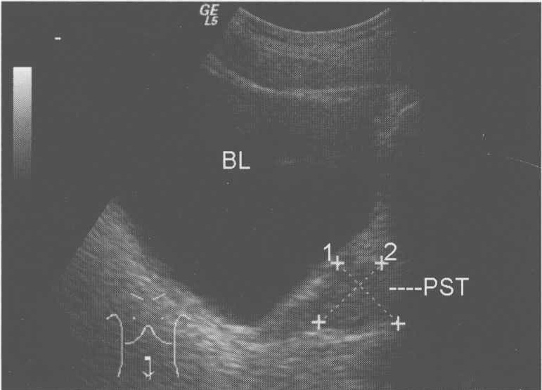
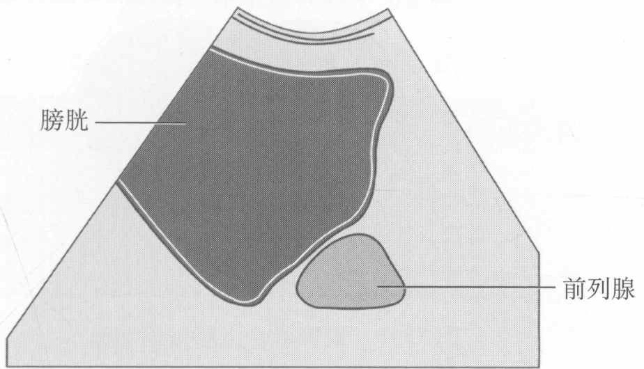
图10-9 耻骨联合上膀胱纵切面
【探查方法】 患者膀胱必须充分充盈，仰卧位，下腹部耻骨联合上纵行扫查。
【断面结构】 膀胱纵断面，其形态因膀胱的充盈程度而异。呈三角形，上方为顶部，下方为底部，膀胱三角区位于后下方，由两侧输尿管口和尿道内口组成。膀胱壁厚2～3mm，正常膀胱排尿后基本上无残余尿。
【测量方法及正常值】测壁厚。测上下径及前后径。膀胱容量的计算为（上下径 × 前后径 × 横径）× 0.523，残余尿测量：尿少时用（上下径 × 前后径 × 横径）× 0.7。
【临床价值】诊断膀胱壁占位性病变，多好发于三角区；诊断膀胱腔内病变；测膀胱容量、残余尿量等。
（二） 耻骨联合上膀胱横切面（图10-10）
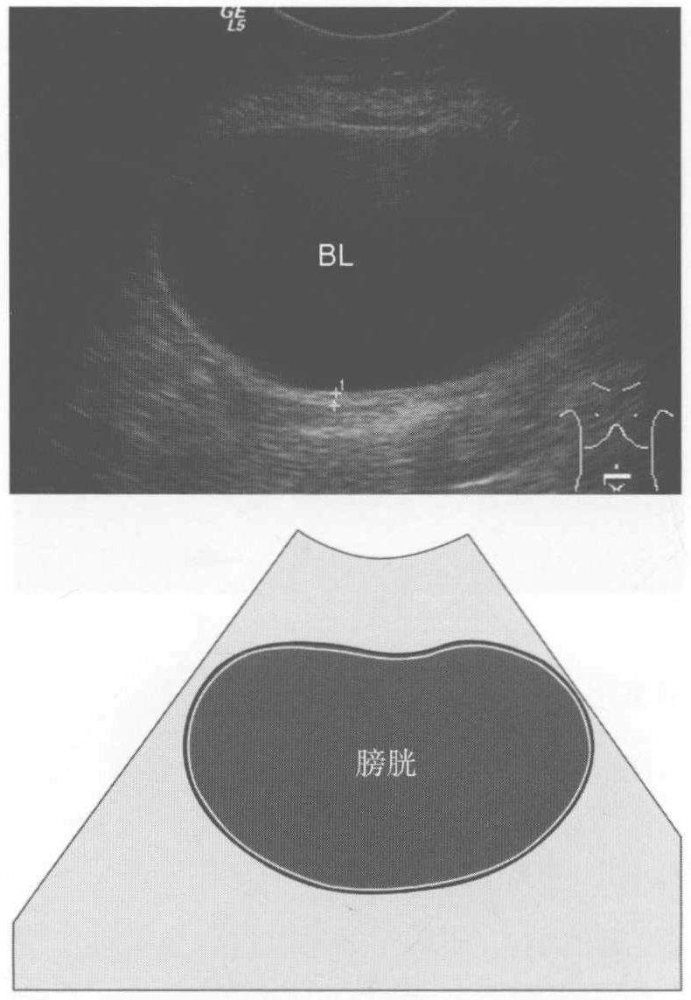
图10-10 耻骨联合上膀胱横切面
【探查方法】患者必须充分充盈，仰卧位，下腹部耻骨联合上横行扫查。
【测量方法及正常值】 测壁厚。测膀胱宽径和前后径。正常膀胱的容量为350～500ml，最大可达800ml，尿潴留时可达1000～2000ml，膀胱容量测量的公式最常用的是 V=0.5× D1× D2× D3此公式适用于尿多时，当尿少时可用 V=0.7× D1× D2× D3， D1、 D2及 D3分别为上下径、前后径及左右径。横切面的横径可预测膀胱的容积，见表10-1。膀胱壁正常解剖厚约1mm，但在声像图，测其厚可达2～3mm，正常78%的人残余尿量＜5ml，100%的人残余尿量＜12ml。膀胱残余尿量＞50ml认为异常。
【断面结构】 膀胱横断面。膀胱由四层结构组成，黏膜、黏膜下层、肌层及浆膜。而黏膜由黏膜层及黏膜肌层组成。在图像放大的情况下，正常膀胱壁回声为五层强弱不等的线状回声组成，回声呈强、弱、强、弱、强。第一层强回声为黏膜表面和膀胱内液体界面的反射。第二层低回声为黏膜肌层，第三层强回声为黏膜下层。第四层低回声为肌层，第五层强回声为浆膜层。
表 10-1 用横切径线预测膀胱容积
| 横切直径范围（cm） | 膀胱容积（CC） |
| 1.0 ~ 3.5 | 50 |
| 3.5 ~ 5.5 | 100 |
| 4.0 ~ 6.5 | 150 |
| 5.5 ~ 8.0 | 200 |
（引自：Henriksson I, Marsal K. Bedside ultrasound diagnosis of residual urine volume. Arch Gynecol, 1982, 231: 129-133.）
【临床价值】诊断膀胱壁占位性病变、膀胱腔内病变、膀胱容量、残余尿量等。观察输尿管口形态。膀胱无回声区是否清晰。
【附注】 注意膀胱内伪像和病变的鉴别。
三、 前列腺
（一） 耻骨联合上前列腺纵切面（图10-11）
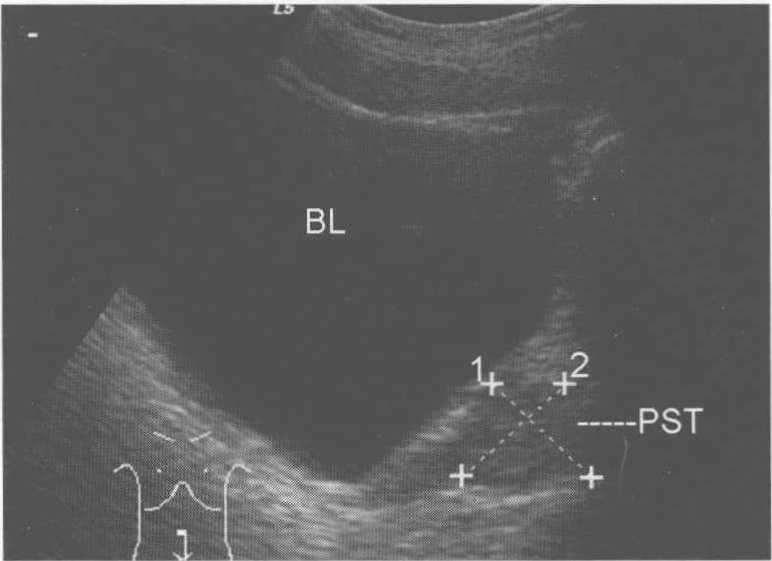
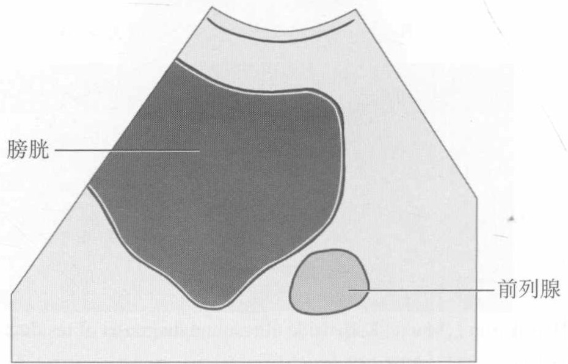
图10-11 耻骨联合上前列腺纵切面
【探查方法】患者必须充分充盈膀胱。仰卧位，下腹部耻骨联合上纵行扫查。
【断面结构】前列腺纵断面，前上方及尿道周围分别为前区及中央区，后下方为周缘区。膀胱颈、尿道内口及尿道前列腺段。
【测量方法及正常值】测前列腺的头尾径及前后径。国内正常值分别为3cm及2～2.5cm；国外统计的正常值分别为2～4cm及2.1～3.4cm。
【临床价值】观察前列腺的大小形态、内部回声及包膜是否连续平滑。中央区易发生钙化，周缘区注意有无结节。包膜有无凸起。前列腺癌易发生在周缘区。
（二） 耻骨联合上前列腺斜冠状切面（图10-12）
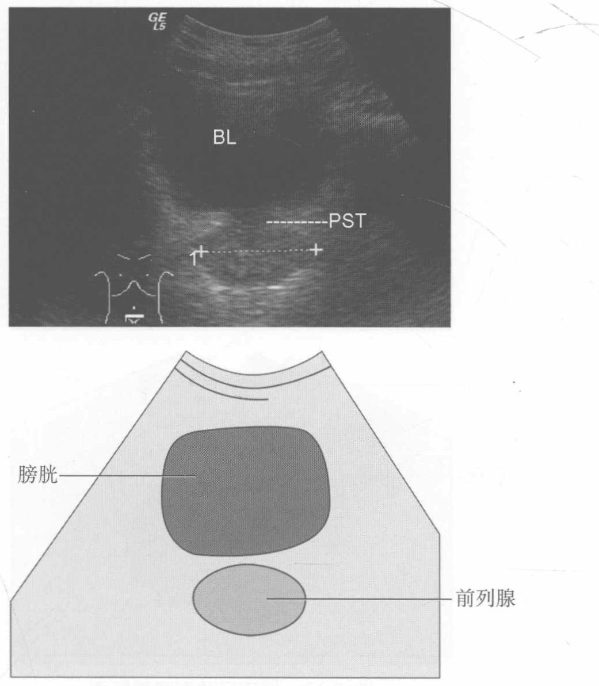
图10-12 耻骨联合上前列腺斜冠状切面
【探查方法】 患者必须充分充盈膀胱。仰卧位，下腹部耻骨联合上纵行扫查。
【断面结构】前方及尿道周围分别为前区及中央区部分，后及后外侧为周缘区。
【测量方法及正常值】测前列腺的横径，正常值：国内为4cm， ≥4cm 提示前列腺增大；国外正常值为5cm， ≥5cm，提示前列腺增生增大。
【临床价值】观察前列腺的大小、形态、内部回声及包膜是否连续平滑。中央区易发生钙化，周缘区注意有无结节。
（三） 经直肠前列腺横断面（图10-13）
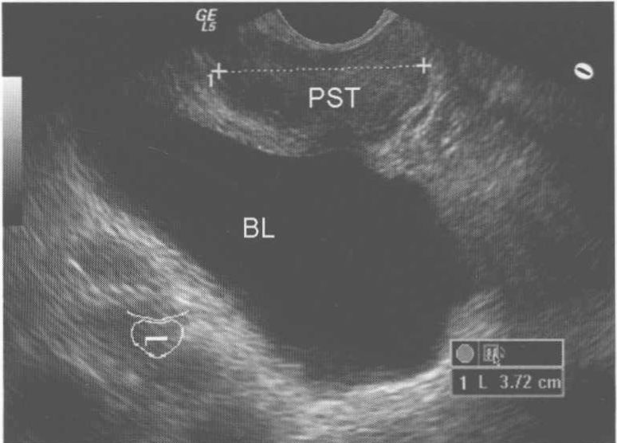
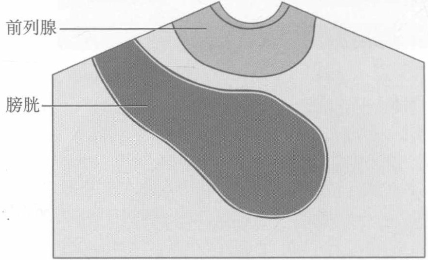
图10-13 经直肠前列腺横断面
【探查方法】患者左侧卧位，两腿屈曲，先将乳胶手套（或避孕套）内装少许的耦合剂，然后套在直肠探头上，横置经肛门缓慢插入直肠。
【测量方法】测前列腺的横径。
【断面结构】显示贴近探头一侧为前列腺的后壁，向前依次为前列腺及膀胱。
【临床价值】较经腹部超声能清晰显示前列腺的边缘及内部结构。
（四） 经直肠前列腺纵切面（图10-14）
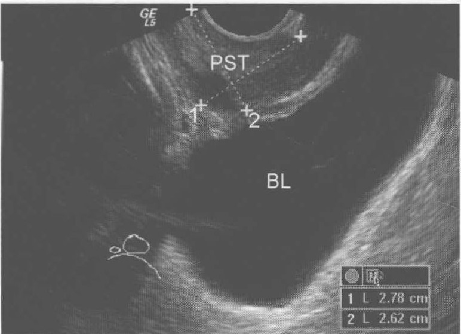
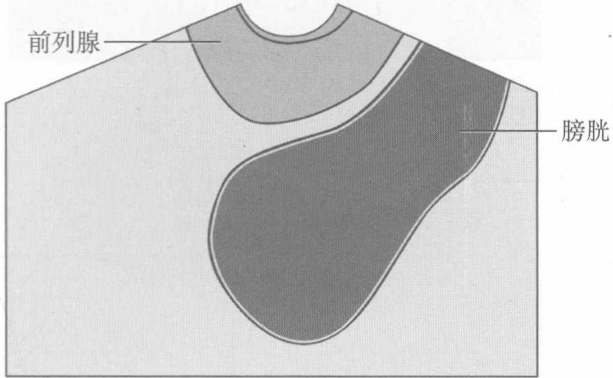
图10-14 经直肠前列腺纵切面
【探查方法】同前切面，在此切面的基础上，探头旋转 90°。
【断面结构】前方为膀胱，后方为前列腺。前列腺、膀胱及尿道的纵切面。
【测量方法及正常值】 测量前列腺的上下径及前后径。
【临床价值】较经腹部超声能清晰显示前列腺的边缘及内部结构。
（五） 耻骨联合上精囊腺横切面（图10-15）
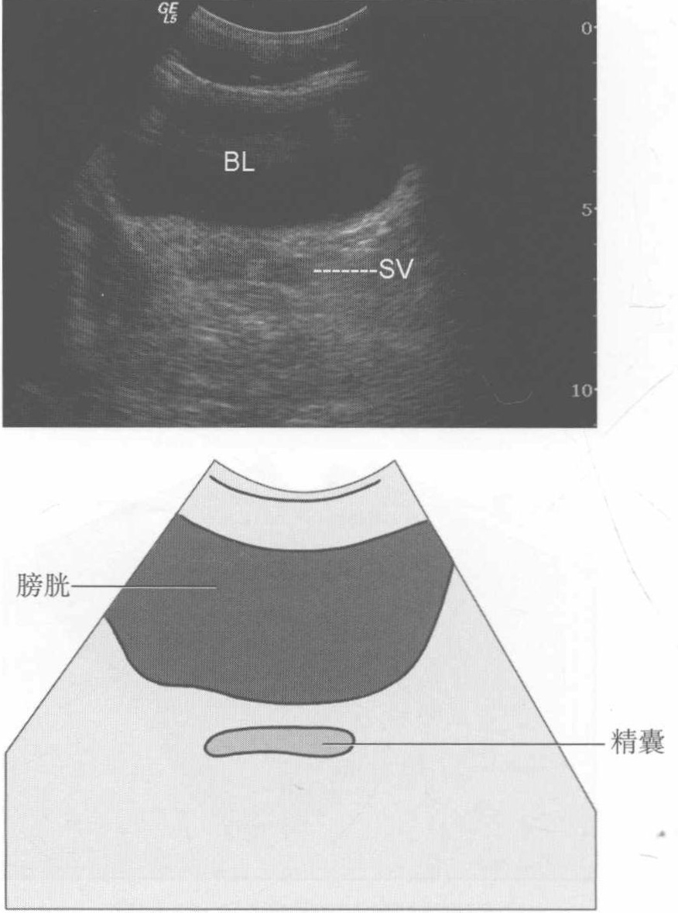
图10-15 耻骨联合上精囊腺横切面
【探查方法】仰卧位，患者必须充分充盈膀胱。下腹部耻骨联合上横切扫查。在显示前列腺横断面后探头向上显示精囊腺的横断面。
【断面结构】显示精囊腺的横断面。呈两侧对称的长条状低回声结构，有包膜。
【测量方法及正常值】测精囊腺的大小。长4～5cm，宽1～1.2cm。
【临床价值】观察精囊腺弥漫性病变及占位性病变。
四、 睾丸、附睾及精索
（一） 睾丸长轴断面（图10-16）
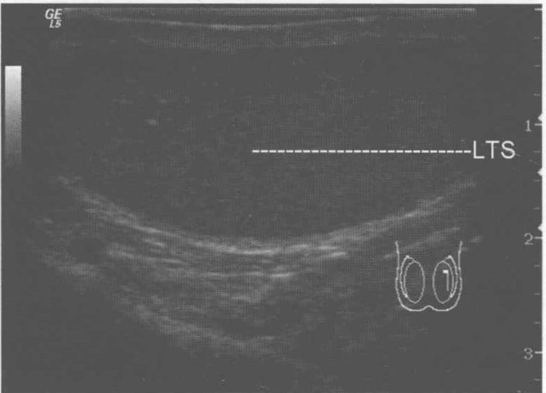
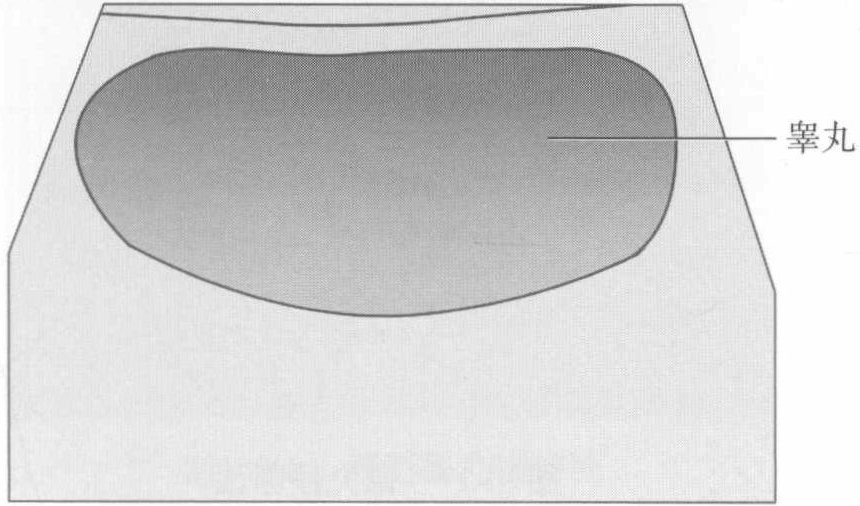
图10-16 睾丸长轴断面
【探查方法】受检者取仰卧位，用纸巾将阴茎上提至前腹壁，可嘱患者用手固定，探头纵置于阴囊前方扫查。
【断面结构】 睾丸纵断面，呈卵圆形。
【测量方法及正常值】可以测量睾丸上下径及前后径。正常睾丸大小为 4~cm × 3~cm × 2~cm。
【临床价值】可用于诊断睾丸肿瘤、外伤、炎症、睾丸扭转、鞘膜积液等。
（二） 睾丸横断面（图10-17）
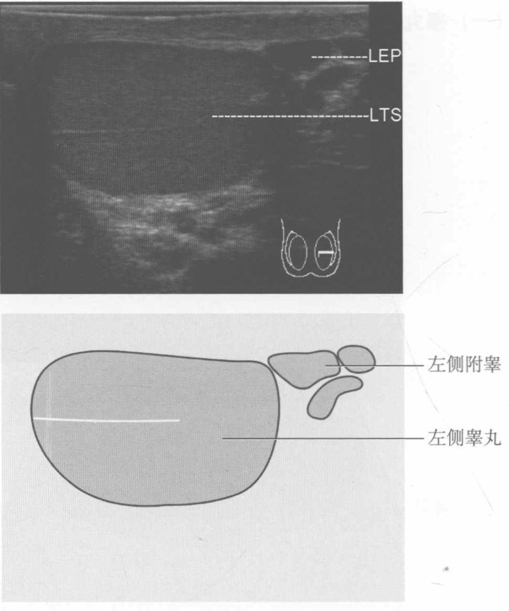
图10-17 睾丸横断面
【断面结构】 睾丸横断面，呈圆形、卵圆形。中间的线状强回声为白膜。附睾体部横断面。
【探查方法】受检者取仰卧位，用纸巾将阴茎上提至前腹壁，可嘱患者用手固定，探头横置于阴囊前方上下扫查。
【临床价值】可用于观察双侧阴囊壁层、睾丸、附睾形态及大小，诊断睾丸肿瘤、外伤、炎症、睾丸扭转、鞘膜积液等。
【测量方法及正常值】可以测量睾丸横径及前后径。
（三） 双侧睾丸横切面（图10-18）
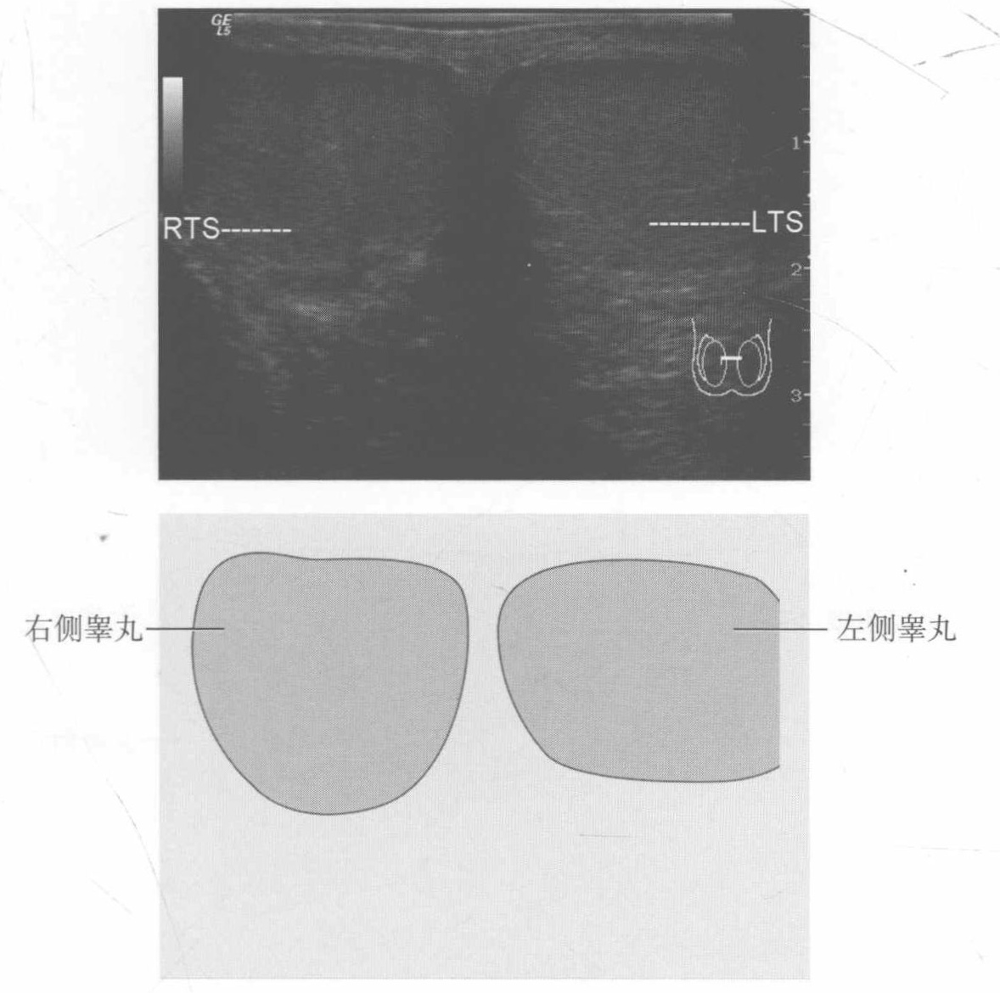
图10-18 双侧睾丸横切面
【断面结构】双侧睾丸横断面，呈圆形、卵圆形，白膜。双侧附睾体部横断面。
【测量方法及正常值】可以测量双侧睾丸横径及前后径。
【探查方法】受检者取仰卧位，用纸巾将阴茎上提至前腹壁，可嘱患者用手固定，探头横置于阴囊前方上下扫查。
【临床价值】可用于对比的观察双侧阴囊壁层、睾丸、附睾形态及大小，内部回声，观察双侧睾丸周围液体多少。诊断睾丸肿瘤、外伤、炎症、睾丸扭转、鞘膜积液等。
（四） 附睾头纵断面（图10-19）
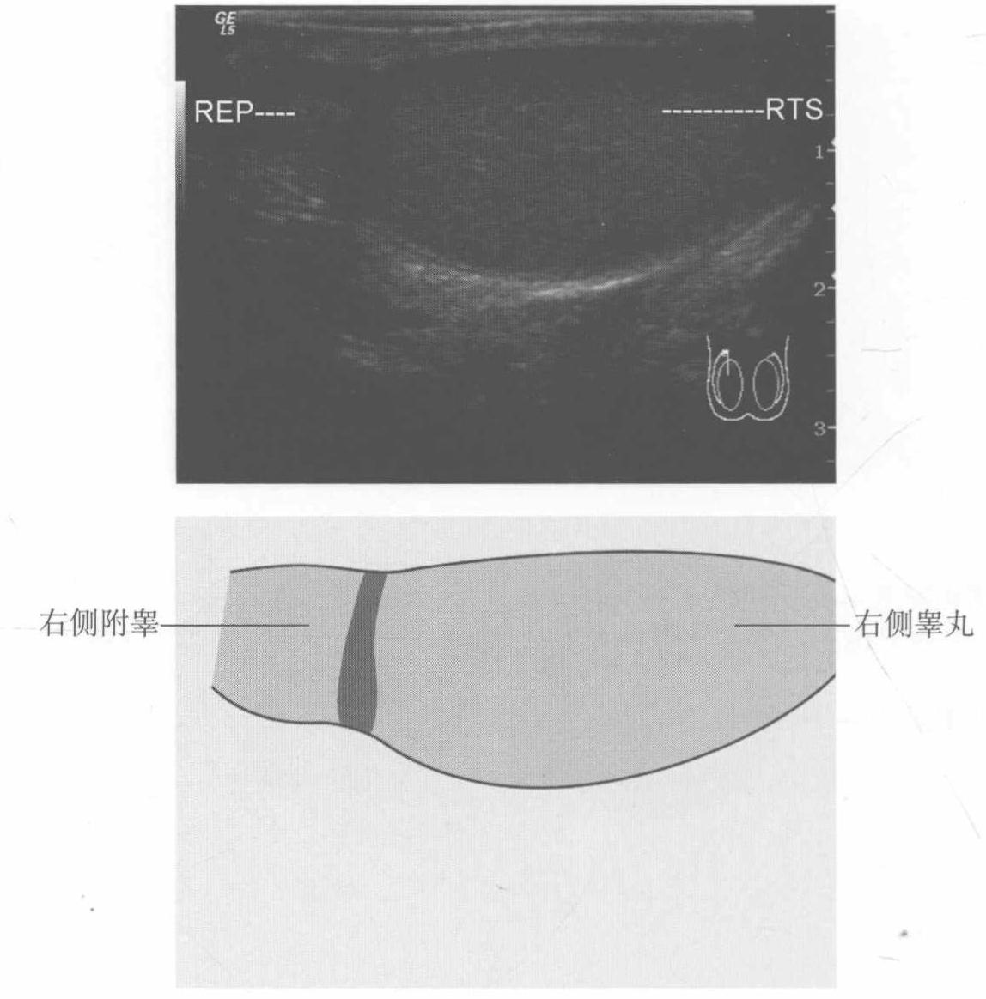
图10-19 附睾头纵断面
【探查方法】受检者取仰卧位，用纸巾将阴茎上提至前腹壁，可嘱患者用手固定，探头纵置于阴囊前方扫查。
【断面结构】附睾头纵断面呈三角形或半月形位于睾丸后上方，并可显示睾丸上部。
【测量方法及正常值】可以测量附睾头上下径及前后径。上下径约1cm。
【临床价值】可用于诊断附睾头囊肿、肿瘤、炎症、鞘膜积液等。
（五） 附睾尾纵断面（图10-20）
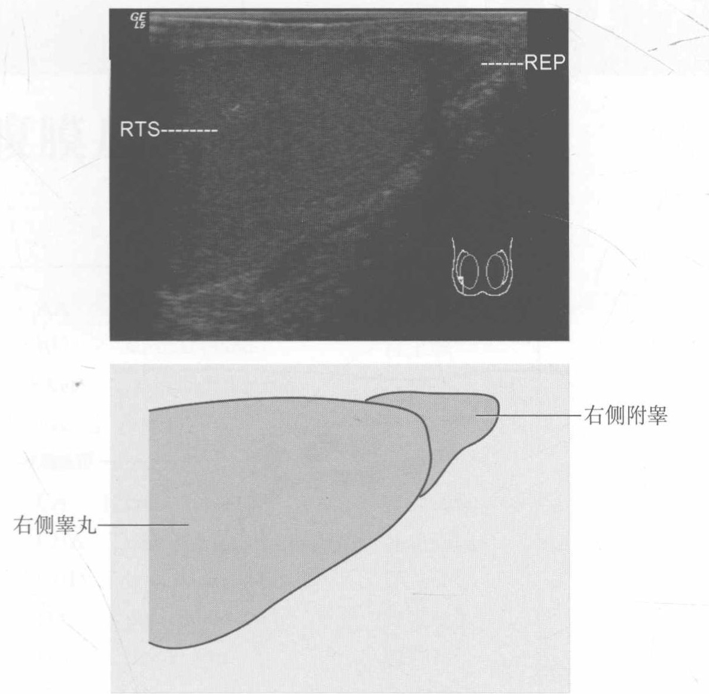
图10-20 附睾尾纵断面
【探查方法】受检者取仰卧位，用纸巾将阴茎上提至前腹壁，可嘱患者用手固定，探头纵置于阴囊下方扫查。
【断面结构】附睾尾纵断面，并可显示睾丸下部。
【测量方法及正常值】可以测量附睾尾上下径及前后径。上下径约0.5cm。
【临床价值】可用于诊断附睾尾肿瘤、炎症、鞘膜积液等。
（六） 精索纵切面（图10-21）
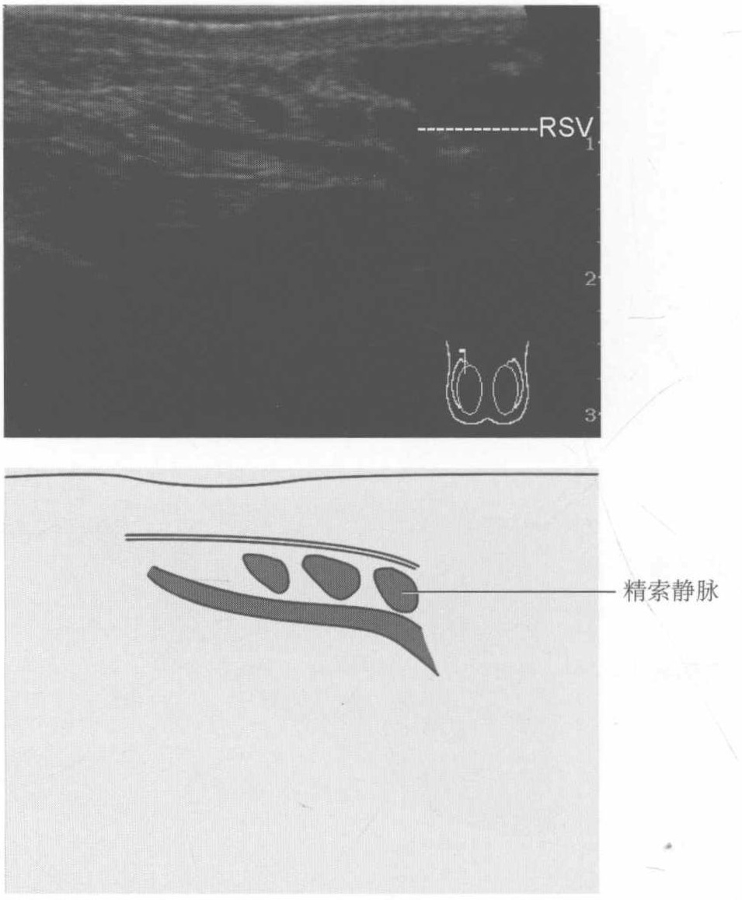
图10-21 精索纵切面
【探查方法】受检者取站立位或仰卧位，用纸巾将阴茎上提至前腹壁，可嘱患者用手固定，探头纵置于阴囊上方扫查。
【断面结构】 蔓状静脉丛、睾丸静脉、睾丸动脉等。
【测量方法及正常值】可以测量精索蔓状静脉丛内径，睾丸静脉内径。正常静脉内径0.5～1.5mm，最大值径1.8mm。
【临床价值】可用于诊断精索静脉曲张、隐睾、鞘膜积液（精索鞘膜积液、睾丸精索鞘膜积液）等。